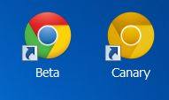

Chrome Developer Tools
Advanced Features
December 2012
Who am I?
Dimitar Bonev - developer in Behind The Book team
Software Setup
-
Chrome Canary
- bleeding-edge build
- runs side-by-side with your other Chrome installation 
-
Chrome flags turned on
- Developer Tools experiments
- Experimental JavaScript
Make live modifications to
- DOM
- JS
- CSS
- SASS/CoffeeScript soon
...view diff, revert and save them
- CTRL+S for each JS/CSS file
-
Tincr Chrome Extension
- Bidirectional: saves to filesystem, reloads modified files
- Specify project directory and patterns for files to URL mapping
- Predefined patterns for popular project types e.g. Rails
- strive for 60 fps
- watch out for forced layout
- Document/Node/Listener counters
- Heap Snapshot comparison view - detached DOM
Settings Panel
- Disable cache
- Enable source maps
- Snippets support
Overrides Panel
- User Agent / Device metrics
- Emulate touch events
Elements Panel
- New Style Rule adds selector automatically
- View relevant Event Listeners
Network Panel
- Duration/Latency/etc. view
- Search and Filter requests
- Preserve log upon navigation (useful for redirects debugging)
Sources Panel
- CTRL+O => open file | CTRL+Shift+O => open method
- CTRL+F => search in current file | CTRL+Shift+F => search in all files
- Pretty print minified files
- Pause on uncaught exceptions
Timeline Panel
- Hide records shorter than 15 ms
- Collect Garbage
Timeline Panel
- Hide records shorter than 15 ms
- Collect Garbage
Profiles Panel
- Comparison view
- legend (question mark)
Console Panel
- Filter logs by severity: errors, warnings, logs
- $0 variable points to currently selected DOM element